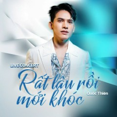
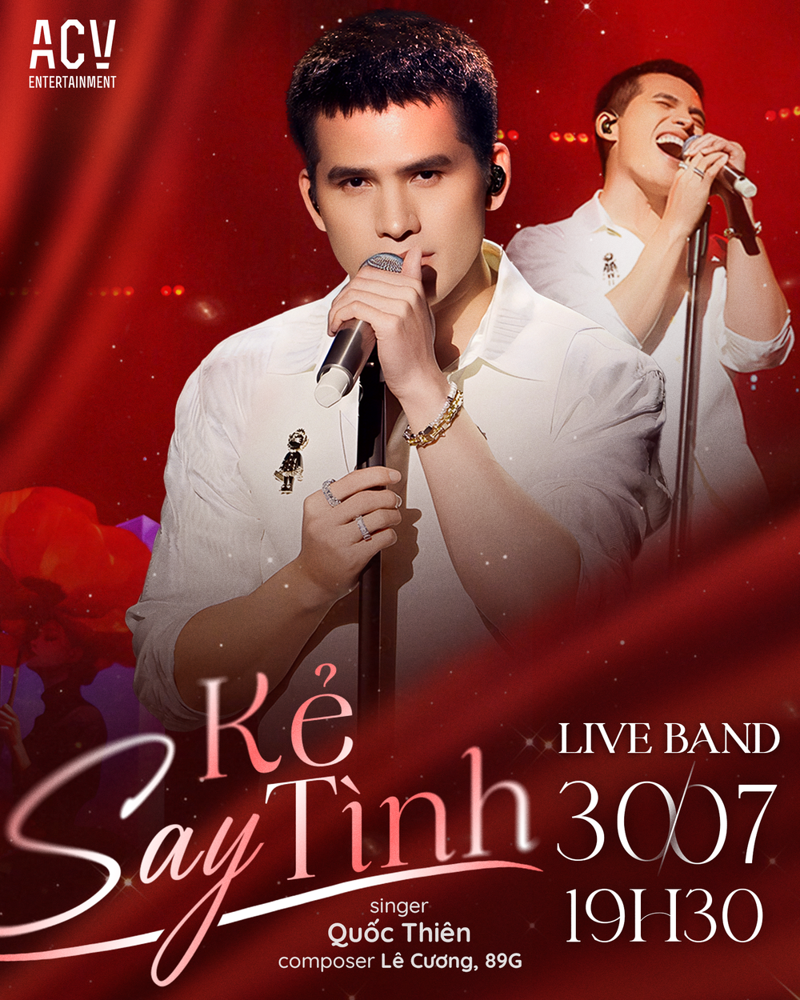

BẢNG XẾP HẠNG TOP 5 CA NHẠC SĨ VIỆT NAM
Thể loại: Pop, R&B, EDM
Sơn Tùng M-TP là nghệ sĩ hàng đầu của V-Pop, nổi tiếng với khả năng sáng tác,
phong cách âm nhạc hiện đại và sức ảnh hưởng mạnh mẽ đến giới trẻ Việt Nam.
- Hãy Trao Cho Anh
- Lạc Trôi
- Đừng Làm Trái Tim Anh Đau


Thể loại: Pop, Ballad
Jack ghi dấu ấn với phong cách âm nhạc mang hơi hướng dân gian,
ca từ gần gũi và dễ đi vào lòng người.
- Sóng Gió
- Bạc Phận
- Hoa Hải Đường


Thể loại: Ballad
Quốc Thiên là quán quân Vietnam Idol 2008,
sở hữu giọng hát giàu cảm xúc và kỹ thuật tốt.
- Rất Lâu Rồi Mới Khóc
- Kẻ Say Tình
- Ngày Mai Người Ta Lấy Chồng
Rất Lâu Rồi Mới Khóc
Kẻ Say Tình
Ngày Mai Người Ta Lấy Chồng

Thể loại: Pop, R&B
Soobin Hoàng Sơn là ca sĩ – nhạc sĩ đa tài,
được đánh giá cao về khả năng trình diễn và cảm nhạc.
- Phía Sau Một Cô Gái
- Nếu Ngày Ấy
- Tháng Năm


Thể loại: Pop, Ballad
Nguyễn Hùng là ca sĩ trẻ được yêu thích bởi các ca khúc
mang màu sắc chữa lành, nhẹ nhàng và giàu cảm xúc.
- Phép Màu
- Còn Gì Đẹp Hơn
- Hẹn Lần Sau